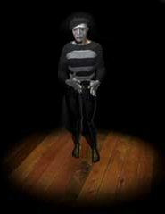
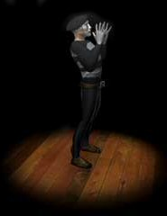
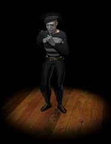

")
Postbag 6
A complex clutter of letters this month, kicking of with my favorite subject...me! If you’re lucky, you might even see me in the game visiting a few of my favorite spots. Feel free to say hello and please, don’t be scared! I’ll explain how it happened one day. I’ve also been talking to river trolls, beards, and we even ask Boot to explain the legend of the black hole. Then, to finish it off, we managed to ask the mime to err, mime a few responses for us. Have fun!
YOU ROCK!
I admire you. You must be so brave to do your job and stick to it. In fact, there is a HUGE crowd of us in our Postie Pete fan club and we would all like to meet you. But no matter where we look, we can't find you. Do you ever go anywhere we can find you? Or do you go on some "staff only" world?
From the president of the Postie Pete fan club/Your No 1 fan,
Blinks182.3
P.S Even if we cant find you, you're still #1.
Well, imagine my joy when I read this one! I’m glad my work is appreciated, it certainly can be a challenge when asked to chat to Rantz (shudder) or the bandits up in the Wilderness. Generally, I am pretty safe during my travels thanks to Wizards' Guild and their clay teleportation tablets. Not being much of a mage I always had problems getting about, especially when new lands are discovered nearly every week, but these tablets sorted it right out! If you look carefully you might see me popping about, I often hang around with my friend Reldo, visiting any of my brothers or chatting to the Oracle up in the mountains. Hope to see you there!
I was just wondering if you're done fixing your boat so we can visit Ak-Haranu's homeland, because that sounds like a fun place to visit. Maybe you could even gimme a discription as well. I'm sure many would like the info as well.
^/Master of Ninja Academy\^,
-~*Lord Kai70*~-
Woooooo! Wooo woo! Wooo woo! Woo? Woo woo woo...
(Puts on amulet of ghostspeak)
...and they won’t relinquish the power they now have. Several of the locals have been taken into slavery, which is why we have been so reluctant to return. The land itself is a place of wonder and mystery, lush with flowers which could not grow in hostile places such as this. It’s such a pity there is so much bloodshed there now, I...I... (at that point, the ghost broke down into ghostly tears. I felt it best to leave).
You just stopped me in the middle of killing an iron dragon and said you were trying to atone for past actions. Then you gave me a spinach roll! Let me tell you, a spinach roll is not my idea of atonement. As a matter of fact, I think it is just one more thing for which you need to atone. It's bad enough to interrupt me while I am in combat, but these spinach rolls are really adding to your karmic burden. You need to rethink this strategy.
(from an unknown writer)
Dear mystery writer,
Karmic burden? What are you talking about? If I can avoid prison by going round and handing out a couple of spinach rolls (lots of people think they are really rare for some silly reason), then I will. Karmic burden, indeed! What’s wrong with spinach anyway? You won’t eat that, but you will eat roasted swamp snails and that gnome rubbish! Very, very odd, I tell you.
Recently I stumbled across a shiny blue doughnut-like disk that had no apparent use. After using it with various things such as anvils and the Chaos Elemental, I decided to examine it. To my surpise, it said "Used to get out of Thordur's black hole."
So I did a bit of research and found Thordur's location is remarkably close to yours. When I ask you, all you do is tell me your long, painful-to-listen-to life story. So, if you don't mind me asking here, WHAT DID YOU DO TO THORDUR AND HIS MYSTICAL HOLE OF BLACKNESS?
Sincerely,
Arcaus Link
P.S. If you killed him, your secret is safe with me. We've all done things we're not proud of...
Dear Arcaus,
Thordur used to have a theme ride really close to my little shoe, er, sorry, cave. I used to live in a shoe, you see, it's easy to get confused...but anyway, he was forced to close it down. You see, it was a magical journey to some really dark, really empty shoes. I mean caves. People wanted to see the “black hole”, a place where all the naughty dwarves were sent when they had been bad. My mother used to tell me that I would be sent there if I didn’t clean my shoe in the morning. I used to live in a shoe, you see, that’s why I am called Boot. Anyway, Thordur ran into problems with the board for Dwarven tourism who had issues with some humans who didn’t like shoes. No, hang on, that’s not it...no, wait a mo... They had become stuck out in the blackness. The black guard had tried to shoe them, er, I mean shoo them out, but they, like all humans, wouldn’t stop complaining. So he had to close the place down. Anyway, the secure cells they send bad folks too are far more organised now, so the tale of Thordur's black hole is more of a legend these days. Now, where’s my old woman gone?
Mr/Mrs River Troll while raising my fishing level at Catherby I noticed somthing strange.
For the mystical label above your head does indeed state RIVER troll, does it not? May I ask why then, if you are a river troll and not an imposter, what you are doing in the salt waters of the Kandarin Sea? Is it because you are a male troll and wouldn't ask for directions, or is it because you are a female troll and couldn't read the map? Mabe I am wrong with both of these and it is due to some other troll-specific reason?
Write back soon
Sir axe alot - Fisher of lobsters and wielder of large axes.
Dear Sir axe a lot,
Dem fishes be mostly in de river. Den big trollnado come. Me and dem missus in dem whirlpool, get into dem sea. Me’s get in dem big trollble. Me hear dem trolley get us back to Trollheim. Me’s try eatin dat clownfish, but it taste funny to me. If you’s helping dem trolls get home, me gives big trollipop! Maybe.
Do your beards truly have a life of their own?
Sincerely manforlove2
Dear manforlove2
Yes, we do.
Lots of love
Dave the beard.
Ralph Barrett said:
Have u ever thought of another profession - say, a doctor or...um...rally car driver...you're just not cut out to be a mime! Also...you're always wearing the same thing, and my mates and I think you smell a bit. So, get a wash, haircut (Falador in case you get lost) and go down the job centre!
 |
 |
 |
Striker said:
1. Can you talk? Or, since talking normally comes first, can you read or write?
2. Can you do the robot?
 |
 |
 |  |
Backstrom Lee said:

Tim Trent said:
I really love being a mime in real life, but I have never gotten a chance to meet you. Here are my questions:
1. What inspires you and first inspired you to be a mime?
2. Why don't you visit me?
3. How many people like your miming?
Your Mimeable freind,
BladofIce65
|  |  |
 |  |
Well, that’s it for this month! Keep writing in and I’ll see you around!
- Postie Pete
| Write your letters to |  |

More articles in
Postbag from the Hedge
|
|